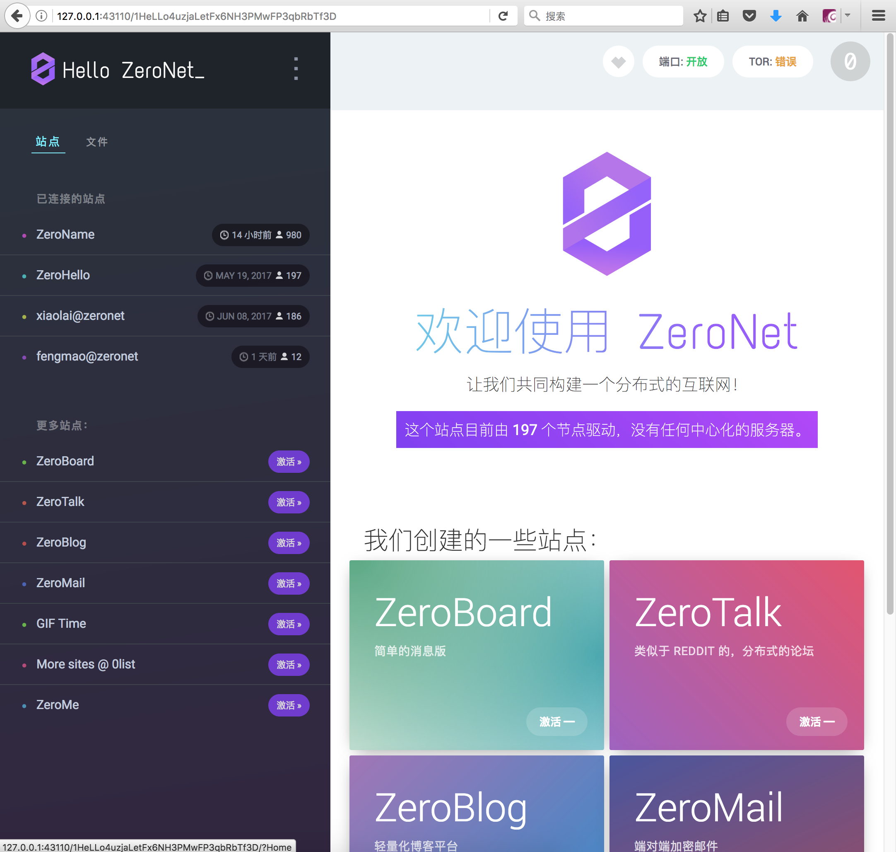

最近比特币大涨，而基于其技术衍生的应用也在蓬勃发展。零网（Zeronet）就是其中之一。
什么是零网?
互联网（Internet）的兴盛，彻底改变了人们的生活。几乎所有线下事物都试图向线上迁移，以享受互联互通的好处。而为公众社会所不苟同的事物，也悄然的网上占据了一席之地。
深网（Deep web）是互联网上一块不可见的领地，你只有带上特殊的眼镜（Tor）才能发现它的存在。理论上对深网的访问不会留下任何可追踪的痕迹，但如果监管部门伪装成用户，设法探知到网站中心服务器的所在，还是可以从物理上让其消失的。
零网（zeronet）则试图通过比特币所依赖的区块链技术来解决这一问题。在零网上，每一个访问结点都是一个服务器，你无法和谐一个网站，除非你删除所有结点上的内容，而在p2p网络中这几乎是不可能做到的。
如何访问？
参照其官网https://zeronet.io/ ：
下载并执行：
wget https://github.com/HelloZeroNet/ZeroNet/archive/master.tar.gz
tar zxvf master.tar.gz
cd ZeroNet-master
python zeronet.py
该过程中可能会遇到一些错误，相信聪明的你一定能轻松搞定它们。
在浏览器中访问http://127.0.0.1:43110/
第一次运行可能需要一点时间从其它节点更新网站数据。

如何建站？
如果你也想建立一个自己站点的话，具体步骤我就不啰嗦了，请参考：
https://zeronet.readthedocs.io/en/latest/using_zeronet/create_new_site/
请记录好你的私钥，只有它才能证明你的站点是你的。
初次发布站点的时候，由于没有其它节点访问你的站点，可能不太容易成功，可以用文尾提到的明网代理来访问你的站点以增加节点。
建成以后你的网址可能长成这样：
http://127.0.0.1:43110/1HeLLo4uzjaLetFx6NH3PMwFP3qbRbTf3D， 长长的一串hash码，又丑又不好记。你一定想要一个漂亮的域名，把你的站点变成这个样子
http://127.0.0.1:43110/your-site.bit.
零网的域名由另一个很有意思的区块链应用域名币（Namecoin）提供，和比特币类似，它也是一个却中心化的，账目公开的域名服务，因此你不用担心你的域名会被和谐掉。目前大概一个Namecoin在人民币13块钱左右，注册一个域名只需要 0.02 Namecoin。怎么样，快来抢注吧。。
注册域名的教程在零网上一大把，甚至有大咖专门帮忙免费注册域名，如果你提供Namecoin地址的话，有时候还附赠Namecoin哦。
当然最后一定要推荐二个你在零网上必须访问的网站：
- http://127.0.0.1:43110/xiaolai.bit 传奇人物李笑来在零网上的主页，满满的全是干货。
- http://127.0.0.1:43110/fengmao.bit 本人在零网上的据点，欢迎访问。
对了，访问零网网站不是必须开启零网客户端的，通过明网代理也可以，直接点击：
https://bit.surf:43110/fengmao.bit 或者 https://0netproxy.ml/fengmao.bit